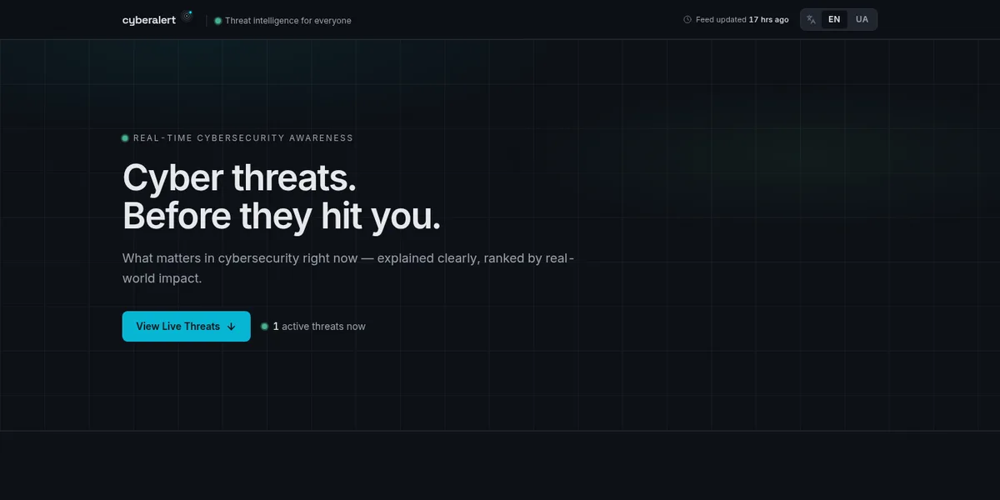
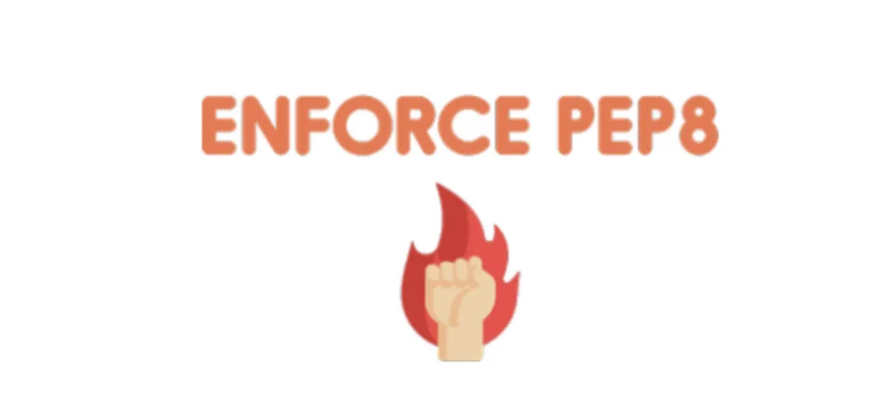

About me
Hey there 👋 I am a passionate Python/SDET/QA engineer from Ukraine 🇺🇦 with over 9 years of commercial experience — 7 years in test automation & quality engineering, and the last 2 years as a Cybersecurity Engineer.
I help teams design reliable test automation ecosystems, improve release confidence, and ship quality faster. In recent years I have been diving into ethical hacking and penetration testing alongside my core automation work.
I enjoy solving complex problems across Python, Linux, Windows (security policies), networking, CI/CD, and web backends 🛡️.
Tech stack
Languages
Preferred languages for system programming and automation.
Tools
Preferred tools for system engineering, testing, and OS security.
Security
Ethical hacking, penetration testing, SAST/DAST, vulnerability assessments.
Professional highlights
Test automation architecture
Built scalable Pytest frameworks with API/UI abstractions and security-focused test coverage — 7 years hardening release confidence across Python projects.
CI/CD quality & security gates
Integrated static analysis, security checks, smart test selection, and release controls into pipelines to reduce risks and accelerate delivery.
Ethical hacking & penetration testing
Conducting web and network penetration tests, vulnerability assessments, and SAST/DAST integration as a Cybersecurity Engineer over the past 2 years.
OS security — Linux & Windows
Applying security policies, hardening configurations, and managing access controls across Linux and Windows environments.
What I can help your team with
- Designing end-to-end test strategies for web services and distributed systems, including security test scenarios.
- Creating robust Python automation (API, integration, regression, and security testing).
- Stabilizing flaky suites and improving quality/security feedback in CI pipelines.
- Conducting penetration tests and vulnerability assessments for web and network targets.
- Applying and auditing security policies on Linux and Windows environments.
- Driving quality and security culture with actionable metrics and engineering collaboration.
Pet projects

CyberAlertX — live threat intel
Cybersecurity intelligence platform: RSS ingestion, AI-powered editorial analysis, and calm, scannable threat updates in English and Ukrainian — what happened, who's hit, what to do. FastAPI + Next.js, with auto-published Telegram channels; source on GitHub.
Check it out!Avoid debug functions usage
A common issue for engineers is leaving debug calls in production code. This flake8 plugin forbids print, breakpoint, and pdb.set_trace from making it into production.
Check it out!Manage order of class attributes
Tired of "please sort attributes alphabetically" review comments? This flake8 plugin automates class attribute ordering checks via static analysis so no human intervention is needed.
Check it out!Emoji output for pytest
Pytest supports custom plugins that extend its CLI output. This plugin adds emoji support to test results — a fun entry point for learning how pytest plugins work.
Check it out!
Punishment for bad Python code
Developers coming from Java or JavaScript often write non-pythonic code. enforce-pep8 diagnoses Python style violations against PEP-8 conventions and enforces clean, idiomatic Python.
Check it out!Object-oriented requests library
The popular requests library exposes a procedural API. urequest wraps it with a pure object-oriented HTTP client interface for cleaner, testable abstractions.
Check it out!